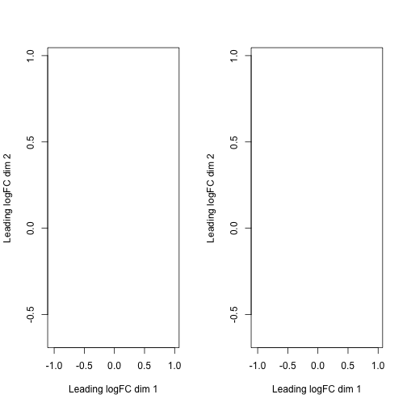
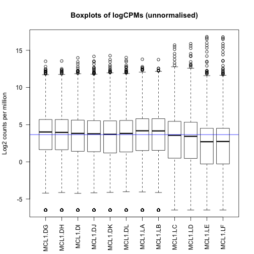
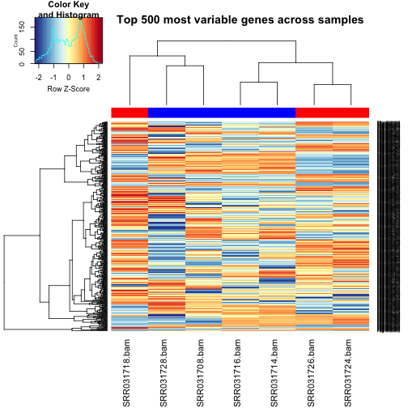
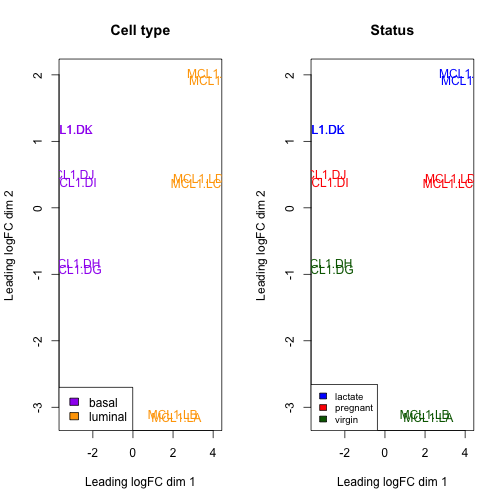
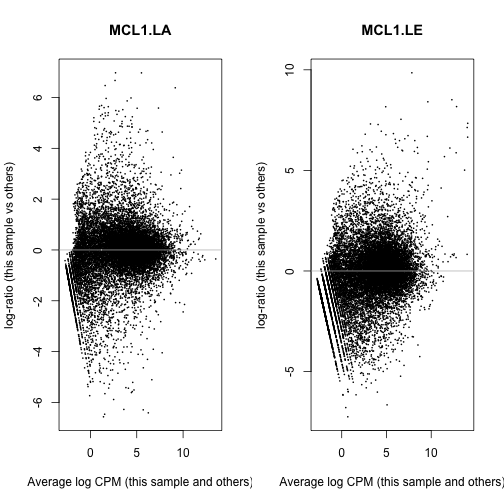
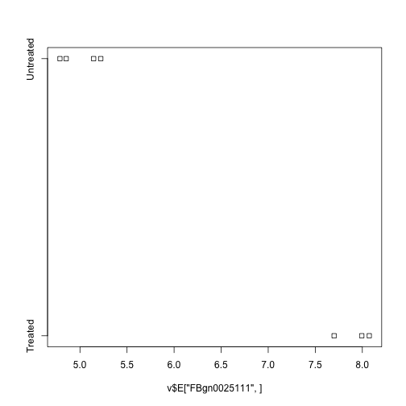
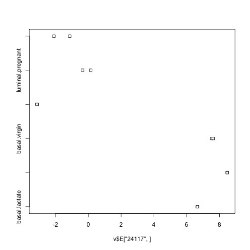
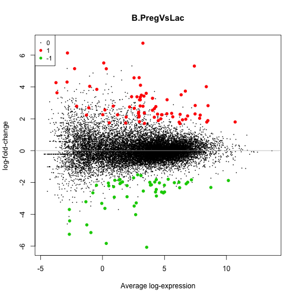
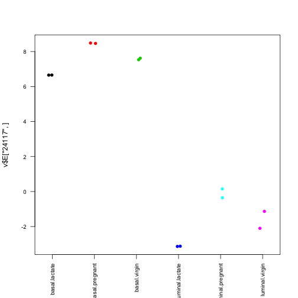
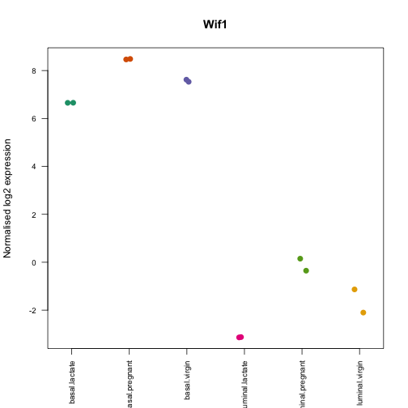

RNA-seq analysis in R
Differential expression analysis
Install packages (move this to a set-up section?)
source("http://bioconductor.org/biocLite.R")
biocLite(c("limma", "edgeR", "gplots", "org.Mm.eg.db", "EDASeq", "RColorBrewer"))
# Install Glimma from source - version for Mac OS X 10.9 (Mavericks)
install.packages("https://www.bioconductor.org/packages/devel/bioc/bin/macosx/mavericks/contrib/3.3/Glimma_0.99.5.tgz", repos = NULL, type="source")
# Install Rsubread (not required for this lesson, but for a later one)
biocLite("Rsubread")Resources and data files
This material has been created using the following resources:
http://www.statsci.org/smyth/pubs/QLedgeRPreprint.pdf (Lun, Chen, and Smyth 2016)
http://monashbioinformaticsplatform.github.io/RNAseq-DE-analysis-with-R/99-RNAseq_DE_analysis_with_R.html
Data files downloaded from:
ftp://ftp.ncbi.nlm.nih.gov/geo/series/GSE60nnn/GSE60450/suppl/GSE60450_Lactation-GenewiseCounts.txt.gz http://bioinf.wehi.edu.au/software/MSigDB/mouse_c2_v5.rdata http://bioinf.wehi.edu.au/software/MSigDB/mouse_H_v5.rdata
Data files for Day 1:
targets.txt GSE60450_Lactation-GenewiseCounts.txt
mouse_c2_v5.rdata
mouse_H_v5.rdata
Data files available from: https://figshare.com/s/1d788fd384d33e913a2a You should download these files and place them in your /data directory.
Packages used: limma, edgeR, gplots, org.Mm.eg.db, EDASeq, RColorBrewer, Glimma
Overview of Day 1
- Reading in table of counts
- Filtering lowly expressed genes
- Quality control
- Normalisation for composition bias
- Differential expression analysis
- Testing relative to a threshold
- Visualisation
- Gene set testing
Introduction and data import
Measuring gene expression on a genome-wide scale has become common practice over the last two decades or so, with microarrays predominantly used pre-2008. With the advent of next generation sequencing technology in 2008, an increasing number of scientists use this technology to measure and understand changes in gene expression in often complex systems. As sequencing costs have decreased, using RNA-Seq to simultaneously measure the expression of tens of thousands of genes for multiple samples has never been easier. The cost of these experiments has now moved from generating the data to storing and analysing it.
There are many steps involved in analysing an RNA-Seq experiment. Analysing an RNAseq experiment begins with sequencing reads. These are aligned to a reference genome, then the number of reads mapped to each gene can be counted. This results in a table of counts, which is what we perform statistical analyses on in R. While mapping and counting are important and necessary tasks, today we will be starting from the count data and getting stuck into analysis.
First, let’s load all the packages we will need to analyse the data.
library(edgeR)
library(limma)
library(EDASeq)
library(Glimma)Warning: package 'Glimma' was built under R version 3.3.0
library(gplots)
library(org.Mm.eg.db)
library(RColorBrewer)Mouse mammary gland dataset
The data for this tutorial comes from a Nature Cell Biology paper, EGF-mediated induction of Mcl-1 at the switch to lactation is essential for alveolar cell survival (Fu et al. 2015). Both the raw data (sequence reads) and processed data (counts) can be downloaded from Gene Expression Omnibus database (GEO) under accession number GSE60450.
This study examines the expression profiles of basal stem-cell enriched cells (B) and committed luminal cells (L) in the mammary gland of virgin, pregnant and lactating mice. Six groups are present, with one for each combination of cell type and mouse status. Each group contains two biological replicates. We will first use the counts file as a starting point for our analysis. This data has already been aligned to the mouse genome. The command line tool featureCounts (Liao, Smyth, and Shi 2014) was used to count reads mapped to human genes from Refseq annotation (see the paper for details).
Reading in the data
Set up an RStudio project specifying the directory where you have saved the directory.
Download and read in the data.
# Read the data into R
seqdata <- read.delim("data/GSE60450_Lactation-GenewiseCounts.txt", stringsAsFactors = FALSE)
# Read the sample information into R
targets <- read.delim("data/targets.txt")Let’s take a look at the data. You can use the head command to see the first 6 lines. The dim command will tell you how many rows and columns the data frame has.
head(seqdata) EntrezGeneID Length MCL1.DG_BC2CTUACXX_ACTTGA_L002_R1
1 497097 3634 438
2 100503874 3259 1
3 100038431 1634 0
4 19888 9747 1
5 20671 3130 106
6 27395 4203 309
MCL1.DH_BC2CTUACXX_CAGATC_L002_R1 MCL1.DI_BC2CTUACXX_ACAGTG_L002_R1
1 300 65
2 0 1
3 0 0
4 1 0
5 182 82
6 234 337
MCL1.DJ_BC2CTUACXX_CGATGT_L002_R1 MCL1.DK_BC2CTUACXX_TTAGGC_L002_R1
1 237 354
2 1 0
3 0 0
4 0 0
5 105 43
6 300 290
MCL1.DL_BC2CTUACXX_ATCACG_L002_R1 MCL1.LA_BC2CTUACXX_GATCAG_L001_R1
1 287 0
2 4 0
3 0 0
4 0 10
5 82 16
6 270 560
MCL1.LB_BC2CTUACXX_TGACCA_L001_R1 MCL1.LC_BC2CTUACXX_GCCAAT_L001_R1
1 0 0
2 0 0
3 0 0
4 3 10
5 25 18
6 464 489
MCL1.LD_BC2CTUACXX_GGCTAC_L001_R1 MCL1.LE_BC2CTUACXX_TAGCTT_L001_R1
1 0 0
2 0 0
3 0 0
4 2 0
5 8 3
6 328 307
MCL1.LF_BC2CTUACXX_CTTGTA_L001_R1
1 0
2 0
3 0
4 0
5 10
6 342
dim(seqdata)[1] 27179 14
The seqdata object contains information about genes (one gene per row), the first column has the Entrez gene id, the second has the gene length and the remaining columns contain information about the number of reads aligning to the gene in each experimental sample. There are two replicates for each cell type and timepoint (detailed sample info can be found in file “GSE60450_series_matrix.txt” from the GEO website). The targets file contains basic information about the samples that we will need for the analysis today.
targets FileName SampleName CellType Status
1 MCL1.DG_BC2CTUACXX_ACTTGA_L002_R1 MCL1.DG basal virgin
2 MCL1.DH_BC2CTUACXX_CAGATC_L002_R1 MCL1.DH basal virgin
3 MCL1.DI_BC2CTUACXX_ACAGTG_L002_R1 MCL1.DI basal pregnant
4 MCL1.DJ_BC2CTUACXX_CGATGT_L002_R1 MCL1.DJ basal pregnant
5 MCL1.DK_BC2CTUACXX_TTAGGC_L002_R1 MCL1.DK basal lactate
6 MCL1.DL_BC2CTUACXX_ATCACG_L002_R1 MCL1.DL basal lactate
7 MCL1.LA_BC2CTUACXX_GATCAG_L001_R1 MCL1.LA luminal virgin
8 MCL1.LB_BC2CTUACXX_TGACCA_L001_R1 MCL1.LB luminal virgin
9 MCL1.LC_BC2CTUACXX_GCCAAT_L001_R1 MCL1.LC luminal pregnant
10 MCL1.LD_BC2CTUACXX_GGCTAC_L001_R1 MCL1.LD luminal pregnant
11 MCL1.LE_BC2CTUACXX_TAGCTT_L001_R1 MCL1.LE luminal lactate
12 MCL1.LF_BC2CTUACXX_CTTGTA_L001_R1 MCL1.LF luminal lactate
We will be manipulating and reformating the counts matrix into a suitable format for downstream analysis. The first two columns in the seqdata dataframe contain annotation information. We need to make a new matrix containing only the counts, but we can store the gene identifiers (the EntrezGeneID column) as rownames. We will add more annotation information about each gene later on in the workshop.
Format the data
Let’s create a new data object, countdata, that contains only the counts for the 12 samples.
# Remove first two columns from seqdata
countdata <- seqdata[,-(1:2)]
# Look at the output
head(countdata) MCL1.DG_BC2CTUACXX_ACTTGA_L002_R1 MCL1.DH_BC2CTUACXX_CAGATC_L002_R1
1 438 300
2 1 0
3 0 0
4 1 1
5 106 182
6 309 234
MCL1.DI_BC2CTUACXX_ACAGTG_L002_R1 MCL1.DJ_BC2CTUACXX_CGATGT_L002_R1
1 65 237
2 1 1
3 0 0
4 0 0
5 82 105
6 337 300
MCL1.DK_BC2CTUACXX_TTAGGC_L002_R1 MCL1.DL_BC2CTUACXX_ATCACG_L002_R1
1 354 287
2 0 4
3 0 0
4 0 0
5 43 82
6 290 270
MCL1.LA_BC2CTUACXX_GATCAG_L001_R1 MCL1.LB_BC2CTUACXX_TGACCA_L001_R1
1 0 0
2 0 0
3 0 0
4 10 3
5 16 25
6 560 464
MCL1.LC_BC2CTUACXX_GCCAAT_L001_R1 MCL1.LD_BC2CTUACXX_GGCTAC_L001_R1
1 0 0
2 0 0
3 0 0
4 10 2
5 18 8
6 489 328
MCL1.LE_BC2CTUACXX_TAGCTT_L001_R1 MCL1.LF_BC2CTUACXX_CTTGTA_L001_R1
1 0 0
2 0 0
3 0 0
4 0 0
5 3 10
6 307 342
# Store EntrezGeneID as rownames
rownames(countdata) <- seqdata[,1]Take a look at the output
head(countdata) MCL1.DG_BC2CTUACXX_ACTTGA_L002_R1
497097 438
100503874 1
100038431 0
19888 1
20671 106
27395 309
MCL1.DH_BC2CTUACXX_CAGATC_L002_R1
497097 300
100503874 0
100038431 0
19888 1
20671 182
27395 234
MCL1.DI_BC2CTUACXX_ACAGTG_L002_R1
497097 65
100503874 1
100038431 0
19888 0
20671 82
27395 337
MCL1.DJ_BC2CTUACXX_CGATGT_L002_R1
497097 237
100503874 1
100038431 0
19888 0
20671 105
27395 300
MCL1.DK_BC2CTUACXX_TTAGGC_L002_R1
497097 354
100503874 0
100038431 0
19888 0
20671 43
27395 290
MCL1.DL_BC2CTUACXX_ATCACG_L002_R1
497097 287
100503874 4
100038431 0
19888 0
20671 82
27395 270
MCL1.LA_BC2CTUACXX_GATCAG_L001_R1
497097 0
100503874 0
100038431 0
19888 10
20671 16
27395 560
MCL1.LB_BC2CTUACXX_TGACCA_L001_R1
497097 0
100503874 0
100038431 0
19888 3
20671 25
27395 464
MCL1.LC_BC2CTUACXX_GCCAAT_L001_R1
497097 0
100503874 0
100038431 0
19888 10
20671 18
27395 489
MCL1.LD_BC2CTUACXX_GGCTAC_L001_R1
497097 0
100503874 0
100038431 0
19888 2
20671 8
27395 328
MCL1.LE_BC2CTUACXX_TAGCTT_L001_R1
497097 0
100503874 0
100038431 0
19888 0
20671 3
27395 307
MCL1.LF_BC2CTUACXX_CTTGTA_L001_R1
497097 0
100503874 0
100038431 0
19888 0
20671 10
27395 342
Now take a look at the column names
colnames(countdata) [1] "MCL1.DG_BC2CTUACXX_ACTTGA_L002_R1"
[2] "MCL1.DH_BC2CTUACXX_CAGATC_L002_R1"
[3] "MCL1.DI_BC2CTUACXX_ACAGTG_L002_R1"
[4] "MCL1.DJ_BC2CTUACXX_CGATGT_L002_R1"
[5] "MCL1.DK_BC2CTUACXX_TTAGGC_L002_R1"
[6] "MCL1.DL_BC2CTUACXX_ATCACG_L002_R1"
[7] "MCL1.LA_BC2CTUACXX_GATCAG_L001_R1"
[8] "MCL1.LB_BC2CTUACXX_TGACCA_L001_R1"
[9] "MCL1.LC_BC2CTUACXX_GCCAAT_L001_R1"
[10] "MCL1.LD_BC2CTUACXX_GGCTAC_L001_R1"
[11] "MCL1.LE_BC2CTUACXX_TAGCTT_L001_R1"
[12] "MCL1.LF_BC2CTUACXX_CTTGTA_L001_R1"
These are the sample names which are pretty long so we’ll shorten these to contain only the relevant information about each sample. We will use the substr command to extract the first 7 characters and use these as the colnames.
# using substr, you extract the characters starting at position 1 and stopping at position 7 of the colnames
colnames(countdata) <- substr(colnames(countdata),start=1,stop=7)Take a look at the output
head(countdata) MCL1.DG MCL1.DH MCL1.DI MCL1.DJ MCL1.DK MCL1.DL MCL1.LA MCL1.LB
497097 438 300 65 237 354 287 0 0
100503874 1 0 1 1 0 4 0 0
100038431 0 0 0 0 0 0 0 0
19888 1 1 0 0 0 0 10 3
20671 106 182 82 105 43 82 16 25
27395 309 234 337 300 290 270 560 464
MCL1.LC MCL1.LD MCL1.LE MCL1.LF
497097 0 0 0 0
100503874 0 0 0 0
100038431 0 0 0 0
19888 10 2 0 0
20671 18 8 3 10
27395 489 328 307 342
Note that the column names are now the same as SampleName in the targets file. This is good because it means our sample information in targets is in the same order as the columns in countdata.
table(colnames(countdata)==targets$SampleName)
TRUE
12
Filtering to remove lowly expressed genes
Genes with very low counts across all libraries provide little evidence for differential expression and they interfere with some of the statistical approximations that are used later in the pipeline. They also add to the multiple testing burden when estimating false discovery rates, reducing power to detect differentially expressed genes. These genes should be filtered out prior to further analysis.
There are a few ways to filter out lowly expressed genes. When there are biological replicates in each group, in this case we have a sample size of 2 in each group, we favour filtering on a minimum counts per million threshold present in at least 2 samples. Two represents the smallest sample size for each group in our experiment. In this dataset, we choose to retain genes if they are expressed at a counts-per-million (CPM) above 0.5 in at least two samples.
We’ll use the cpm function from the edgeR library (???) to generate the CPM values and then filter. Note that by converting to CPMs we are normalising for the different sequencing depths for each sample.
# Obtain CPMs
myCPM <- cpm(countdata)
# Have a look at the output
head(myCPM) MCL1.DG MCL1.DH MCL1.DI MCL1.DJ MCL1.DK
497097 18.85684388 13.77543859 2.69700983 10.45648006 16.442685
100503874 0.04305215 0.00000000 0.04149246 0.04412017 0.000000
100038431 0.00000000 0.00000000 0.00000000 0.00000000 0.000000
19888 0.04305215 0.04591813 0.00000000 0.00000000 0.000000
20671 4.56352843 8.35709941 3.40238163 4.63261775 1.997275
27395 13.30311589 10.74484210 13.98295863 13.23605071 13.469996
MCL1.DL MCL1.LA MCL1.LB MCL1.LC MCL1.LD
497097 14.3389690 0.0000000 0.0000000 0.0000000 0.00000000
100503874 0.1998463 0.0000000 0.0000000 0.0000000 0.00000000
100038431 0.0000000 0.0000000 0.0000000 0.0000000 0.00000000
19888 0.0000000 0.4903857 0.1381969 0.4496078 0.09095771
20671 4.0968483 0.7846171 1.1516411 0.8092940 0.36383085
27395 13.4896224 27.4615975 21.3744588 21.9858214 14.91706476
MCL1.LE MCL1.LF
497097 0.0000000 0.0000000
100503874 0.0000000 0.0000000
100038431 0.0000000 0.0000000
19888 0.0000000 0.0000000
20671 0.1213404 0.4055595
27395 12.4171715 13.8701357
# Which values in myCPM are greater than 0.5?
thresh <- myCPM > 0.5
# This produces a logical matrix with TRUEs and FALSEs
head(thresh) MCL1.DG MCL1.DH MCL1.DI MCL1.DJ MCL1.DK MCL1.DL MCL1.LA MCL1.LB
497097 TRUE TRUE TRUE TRUE TRUE TRUE FALSE FALSE
100503874 FALSE FALSE FALSE FALSE FALSE FALSE FALSE FALSE
100038431 FALSE FALSE FALSE FALSE FALSE FALSE FALSE FALSE
19888 FALSE FALSE FALSE FALSE FALSE FALSE FALSE FALSE
20671 TRUE TRUE TRUE TRUE TRUE TRUE TRUE TRUE
27395 TRUE TRUE TRUE TRUE TRUE TRUE TRUE TRUE
MCL1.LC MCL1.LD MCL1.LE MCL1.LF
497097 FALSE FALSE FALSE FALSE
100503874 FALSE FALSE FALSE FALSE
100038431 FALSE FALSE FALSE FALSE
19888 FALSE FALSE FALSE FALSE
20671 TRUE FALSE FALSE FALSE
27395 TRUE TRUE TRUE TRUE
# Summary of how many TRUEs there are in each row
# There are 11433 genes that have TRUEs in all 12 samples.
table(rowSums(thresh))
0 1 2 3 4 5 6 7 8 9 10 11
10857 518 544 307 346 307 652 323 547 343 579 423
12
11433
# we would like to keep genes that have at least 2 TRUES in each row of thresh
keep <- rowSums(thresh) >= 2
# Subset the rows of countdata to keep the more highly expressed genes
counts.keep <- countdata[keep,]
summary(keep) Mode FALSE TRUE NA's
logical 11375 15804 0
A CPM of 0.5 is used as it corresponds to a count of 10-15 for the library sizes in this data set. If the count is any smaller, it is considered to be very low, indicating that the associated gene is not expressed in that sample. A requirement for expression in two or more libraries is used as each group contains two replicates. This ensures that a gene will be retained if it is only expressed in one group. Smaller CPM thresholds are usually appropriate for larger libraries. As a general rule, a good threshold can be chosen by identifying the CPM that corresponds to a count of 10, which in this case is about 0.5. You should filter with CPMs rather than filtering on the counts directly, as the latter does not account for differences in library sizes between samples.
# Let's have a look and see whether our threshold of 0.5 does indeed correspond to a count of about 10-15
# We will look at the first sample
plot(myCPM[,1],countdata[,1])
# Let us limit the x and y-axis so we can actually look to see what is happening at the smaller counts
plot(myCPM[,1],countdata[,1],ylim=c(0,50),xlim=c(0,3))
# Add a vertical line at 0.5 CPM
abline(v=0.5)
Exercise: (1) Plot the counts-per-million versus counts for the second sample. (2) Add a vertical line at 0.5 and a horizontal line at 10. (3) Add the lines again, colouring them blue HINT: use the col parameter.
Convert counts to DGEList object
Next we’ll create a DGEList object. This is an object used by edgeR to store count data. It has a number of slots for storing various parameters about the data.
y <- DGEList(counts.keep)
# have a look at y
yAn object of class "DGEList"
$counts
MCL1.DG MCL1.DH MCL1.DI MCL1.DJ MCL1.DK MCL1.DL MCL1.LA MCL1.LB
497097 438 300 65 237 354 287 0 0
20671 106 182 82 105 43 82 16 25
27395 309 234 337 300 290 270 560 464
18777 652 515 948 935 928 791 826 862
21399 1604 1495 1721 1317 1159 1066 1334 1258
MCL1.LC MCL1.LD MCL1.LE MCL1.LF
497097 0 0 0 0
20671 18 8 3 10
27395 489 328 307 342
18777 668 646 544 581
21399 1068 926 508 500
15799 more rows ...
$samples
group lib.size norm.factors
MCL1.DG 1 23218026 1
MCL1.DH 1 21768136 1
MCL1.DI 1 24091588 1
MCL1.DJ 1 22656713 1
MCL1.DK 1 21522033 1
7 more rows ...
# See what slots are stored in y
names(y)[1] "counts" "samples"
# Library size information is stored in the samples slot
y$samples group lib.size norm.factors
MCL1.DG 1 23218026 1
MCL1.DH 1 21768136 1
MCL1.DI 1 24091588 1
MCL1.DJ 1 22656713 1
MCL1.DK 1 21522033 1
MCL1.DL 1 20008326 1
MCL1.LA 1 20384562 1
MCL1.LB 1 21698793 1
MCL1.LC 1 22235847 1
MCL1.LD 1 21982745 1
MCL1.LE 1 24719697 1
MCL1.LF 1 24652963 1
Quality control
Now that we have got rid of the lowly expressed genes and have our counts stored in a DGEList object, we can look at a few different plots to check that the data is good quality, and that the samples are as we would expect.
Library sizes and distribution plots
First, we can check how many reads we have for each sample in the y.
y$samples$lib.size [1] 23218026 21768136 24091588 22656713 21522033 20008326 20384562
[8] 21698793 22235847 21982745 24719697 24652963
We can also plot the library sizes as a barplot to see whether there are any major discrepanies between the samples more easily.
# The names argument tells the barplot to use the sample names on the x-axis
# The las argument rotates the axis names
barplot(y$samples$lib.size,names=colnames(y),las=2)
# Add a title to the plot
title("Barplot of library sizes")
Count data is not normally distributed, so if we want to examine the distributions of the raw counts we need to log the counts. Next we’ll use box plots to check the distribution of the read counts on the log2 scale. We can use the cpm function to get log2 counts per million, which are corrected for the different library sizes. The cpm function also adds a small offset to avoid taking log of zero.
# Get log2 counts per million
logcounts <- cpm(y,log=TRUE)
# Check distributions of samples using boxplots
boxplot(logcounts, xlab="", ylab="Log2 counts per million",las=2)
# Let's add a blue horizontal line that corresponds to the median logCPM
abline(h=median(logcounts),col="blue")
title("Boxplots of logCPMs (unnormalised)")
From the boxplots we see that overall the density distributions of raw log-intensities are not identical but still not very different. If a sample is really far above or below the blue horizontal line we may need to investigate that sample further.
Another kind of QC plot that is helpful in checking for dodgy samples is a relative log expression (RLE) plot from the EDASeq package (Risso et al. 2011). It shows boxplots of gene-level read counts of each sample relative to a reference sample, which is defined as the median across the samples.
# You need to give plotRLE a matrix of counts
plotRLE(y$counts,las=2)
title("RLE plot of unnormalised counts")
Ideally, the distributions should be centred around zero and be as tight as possible. It looks a bit different to the boxplot of the logcounts, but overall the patterns look the same. Which samples appear to be more variable/different than the rest?
Multidimensional scaling plots
By far, one of the most important plots we make when we analyse RNA-Seq data are MDSplots. An MDSplot is a visualisation of a principle components analysis, which determines the greatest sources of variation in the data. A principle components analysis is an example of an unsupervised analysis, where we don’t need to specify the groups. If your experiment is well controlled and has worked well, what we hope to see is that the greatest sources of variation in the data are the treatments/groups we are interested in. It is also an incredibly useful tool for quality control and checking for outliers. We can use the plotMDS function to create the MDS plot.
plotMDS(y)
It is a bit difficult to see exactly what is going on with the default plot, although we do see samples grouping together in pairs. To make this plot more informative, we can colour the samples according to the grouping information. We can also change the labels, or instead of labels we can have points.
# We specify the option to let us plot two plots side-by-sde
par(mfrow=c(1,2))
# Let's set up colour schemes for CellType
# How many cell types and in what order are they stored?
levels(targets$CellType)[1] "basal" "luminal"
## Let's choose purple for basal and orange for luminal
col.cell <- c("purple","orange")[targets$CellType]
col.cell [1] "purple" "purple" "purple" "purple" "purple" "purple" "orange"
[8] "orange" "orange" "orange" "orange" "orange"
# Redo the MDS with cell type colouring
plotMDS(y,col=col.cell)
# Let's add a legend to the plot so we know which colours correspond to which cell type
legend("bottomleft",fill=c("purple","orange"),legend=levels(targets$CellType))
# Add a title
title("Cell type")
# Similarly for status
levels(targets$Status)[1] "lactate" "pregnant" "virgin"
col.status <- c("blue","red","dark green")[targets$Status]
col.status [1] "dark green" "dark green" "red" "red" "blue"
[6] "blue" "dark green" "dark green" "red" "red"
[11] "blue" "blue"
plotMDS(y,col=col.status)
legend("bottomleft",fill=c("blue","red","dark green"),legend=levels(targets$Status),cex=0.8)
title("Status")
What is the greatest source of variation in the data (i.e. what does dimension 1 represent)? What is the second greatest source of variation in the data?
Exercise: (1) Redo the plots choosing your own colours. (2) Change the plotting characters to symbols instead of the column names HINT: use pch argument. Try pch=16 and see what happens.
Now let’s combine the two levels of information on the plot using different plotting characters for the cell type and different colours for the status.
# Let's combine status and cell type info on one plot using plotting characters and colours
# Make a new group variable that joins together cell type and status with the paste command
par(mfrow=c(1,1))
group <- factor(paste(targets$CellType,targets$Status,sep="."))
group [1] basal.virgin basal.virgin basal.pregnant basal.pregnant
[5] basal.lactate basal.lactate luminal.virgin luminal.virgin
[9] luminal.pregnant luminal.pregnant luminal.lactate luminal.lactate
6 Levels: basal.lactate basal.pregnant basal.virgin ... luminal.virgin
# the table function will tell us how many samples we have in each group
table(group)group
basal.lactate basal.pregnant basal.virgin luminal.lactate
2 2 2 2
luminal.pregnant luminal.virgin
2 2
points <- c(0,1,2,15,16,17)
colors <- rep(c("blue", "darkgreen", "red"), 2)
plotMDS(y, col=colors[group], pch=points[group])
legend("bottomleft", legend=levels(group), pch=points, col=colors, ncol=2,cex=0.7)
The distance between each pair of samples in the MDS plot is calculated as the leading fold change, defined as the root-mean-square of the largest 500 log2-fold changes between that pair of samples. Replicate samples from the same group cluster together in the plot, while samples from different groups form separate clusters. This indicates that the differences between groups are larger than those within groups, i.e., differential expression is greater than the variance and can be detected. In the MDS plot, the distance between basal samples on the left and luminal cells on the right is about 6 units, corresponding to a leading fold change of about 64-fold (2^6 = 64) between basal and luminal. The expression differences between virgin, pregnant and lactating are greater for luminal cells than for basal.
Notes
- The MDS plot can be simply generated with
plotMDS(y). The additional code is purely for aesthetics, to improve the visualization of the groups. - Clustering in the MDS plot can be used to motivate changes to the design matrix in light of potential batch effects. For example, imagine that the first replicate of each group was prepared at a separate time from the second replicate. If the MDS plot showed separation of samples by time, it might be worthwhile including time in the down stream analysis to account for the time-based effect.
plotMDS plots the first two dimensions as a default, however you can plot higher dimensions using the dim argument.
plotMDS(y,dim=c(3,4),col=colors[group], pch=points[group])
legend("topright", legend=levels(group), pch=points, col=colors, ncol=2,cex=0.8)
If we want to see how much variability is attributed to each principle component, we can use the prcomp function. plotMDS automatically takes logCPMs when you give it a DGEList object, however prcomp doesn’t, so you need to give prcomp the logcounts object. You can see that the first component captures the majority of the variation in the data.
pca <- prcomp(logcounts)
plot(pca$sdev)
Another alternative is to generate an interactive MDS plot using the Glimma package. This allows the user to interactively explore the different dimensions.
labels = paste(targets$SampleName, targets$CellType, targets$Status)
glMDSPlot(y, labels=labels, groups=group)Glimma was created to make interactive versions of some of the popular plots from the limma package. At present it can be used to obtain MDS plots and mean-difference (MD) plots, which will be covered later. The output of glMDSPlot is an html page that shows the MDS plot on the left, and the amount of variation explained by each dimension in a barplot on the right. The user can hover over points to find out sample information, and switch between successive dimensions in the MDS plot by clicking on the bars in the barplot. The default MDS plots shows dimensions 1 and 2.
Hierarchical clustering with heatmaps
An alternative to plotMDS for examining relationships between samples is using hierarchical clustering. Heatmaps are a nice visualisation to examine hierarchical clustering of your samples. We can do this using the heatmap.2 function from the gplots package. In this example heatmap.2 calculates a matrix of euclidean distances from the logCPM (logcounts object) for the 500 most variable genes.
The RColorBrewer package has nicer colour schemes, accessed using the brewer.pal function. “RdYlBu” is a common choice, and “Spectral” is also nice.
Note:The png function will create a png file where to save the plots created straight after, and will close this file when dev.off() is called. To see your plots interactively, simply omit those two lines.
Let’s select data for the 500 most variable genes and plot the heatmap
# We estimate the variance for each row in the logcounts matrix
var_genes <- apply(logcounts, 1, var)
head(var_genes) 497097 20671 27395 18777 21399 58175
27.4382296 3.3141188 0.1596456 0.1313426 0.3947091 6.2321017
# Get the gene names for the top 500 most variable genes
select_var <- names(sort(var_genes, decreasing=TRUE))[1:500]
head(select_var)[1] "16846" "72902" "56747" "497097" "24117" "109205"
# Subset logcounts matrix
highly_variable_lcpm <- logcounts[select_var,]
dim(highly_variable_lcpm)[1] 500 12
head(highly_variable_lcpm) MCL1.DG MCL1.DH MCL1.DI MCL1.DJ MCL1.DK MCL1.DL MCL1.LA
16846 0.4290261 1.394877 4.025241 6.068229 5.923462 5.467369 -6.486175
72902 1.4460253 2.569794 6.084854 5.183325 5.216547 4.629406 -6.486175
56747 3.3347872 2.975754 5.071799 5.016300 5.599113 6.048402 -6.486175
497097 4.2384664 3.785840 1.437863 3.388414 4.040841 3.843500 -6.486175
24117 7.8373931 7.899107 8.634338 8.582153 6.703626 6.776308 -1.710778
109205 5.5238723 5.717292 6.197664 6.203120 6.526628 6.529395 -6.486175
MCL1.LB MCL1.LC MCL1.LD MCL1.LE MCL1.LF
16846 -4.1268214 -4.155152 -6.48617500 -6.486175 -6.486175
72902 -6.4861750 -3.306148 -4.14190372 -6.486175 -6.486175
56747 -6.4861750 -3.306148 -6.48617500 -4.276248 -4.273190
497097 -6.4861750 -6.486175 -6.48617500 -6.486175 -6.486175
24117 -0.7124885 -0.366455 0.01712352 -4.276248 -4.273190
109205 -1.7975234 -2.388018 -3.29144547 -4.276248 -2.527764
## Get some nicer colours
mypalette <- brewer.pal(11,"RdYlBu")
morecols <- colorRampPalette(mypalette)
# Plot the heatmap
heatmap.2(highly_variable_lcpm,col=rev(morecols(50)),trace="none", main="Top 500 most variable genes across samples",ColSideColors=col.cell,scale="row")
# Save the heatmap
png(file="High_var_genes.heatmap.png")
heatmap.2(highly_variable_lcpm,col=rev(morecols(50)),trace="none", main="Top 500 most variable genes across samples",ColSideColors=col.cell,scale="row")
dev.off()quartz_off_screen
2
Exercise: (1) Change the colour scheme to “PiYG” and redo the heatmap. Try ?RColorBrewer and see what other colour schemes are available. (2) Change the sample names to group using the labCol argument (3) Redo the heatmap using the top 500 LEAST variable genes.
Normalisation for composition bias
TMM normalization is performed to eliminate composition biases between libraries (Robinson and Oshlack 2010). This generates a set of normalization factors, where the product of these factors and the library sizes defines the effective library size. The calcNormFactors function calculates the normalization factors between libraries. TMM normalisation (and most scaling normalisation methods) scale relative to one sample.
# Apply normalisation to DGEList object
y <- calcNormFactors(y)This will update the normalisation factors in the DGEList object (their default values are 1). Take a look at the normalisation factors for these samples.
y$samples group lib.size norm.factors
MCL1.DG 1 23218026 1.2368993
MCL1.DH 1 21768136 1.2139485
MCL1.DI 1 24091588 1.1255640
MCL1.DJ 1 22656713 1.0698261
MCL1.DK 1 21522033 1.0359212
MCL1.DL 1 20008326 1.0872153
MCL1.LA 1 20384562 1.3684449
MCL1.LB 1 21698793 1.3653200
MCL1.LC 1 22235847 1.0047431
MCL1.LD 1 21982745 0.9232822
MCL1.LE 1 24719697 0.5291015
MCL1.LF 1 24652963 0.5354877
The normalization factors multiply to unity across all libraries. A normalization factor below one indicates that the library size will be scaled down, as there is more suppression (i.e., composition bias) in that library relative to the other libraries. This is also equivalent to scaling the counts upwards in that sample. Conversely, a factor above one scales up the library size and is equivalent to downscaling the counts.
The last two samples have much smaller normalisation factors, and MCL1.LA and MCL1.LB have the largest. If we plot mean difference plots using the plotMD function for these samples, we should be able to see the composition bias problem. We will use the logcounts, which have been normalised for library size, but not for composition bias.
par(mfrow=c(1,2))
plotMD(logcounts,column = 7)
abline(h=0,col="grey")
plotMD(logcounts,column = 11)
abline(h=0,col="grey")
The mean-difference plots show average expression (mean: x-axis) against log-fold-changes (difference: y-axis). Because our DGEList object contains the normalisation factors, if we redo these plots using y, we should see the composition bias problem has been solved.
par(mfrow=c(1,2))
plotMD(y,column = 7)
abline(h=0,col="grey")
plotMD(y,column = 11)
abline(h=0,col="grey")
Exercise: Plot the biased and unbiased MD plots side by side for the same sample to see the before and after TMM normalisation effect.
Diffential expression with limma-voom
Now that we are happy that we have normalised the data and that the quality looks good, we can continue to testing for differentially expressed genes. There are a number of packages to analyse RNA-Seq data. The limma package (Ritchie et al. 2015) (since version 3.16.0) offers the voom function, which transforms the read counts into logCPMs while taking into account the mean-variance relationship in the data (C. W. Law et al. 2014). After vooming, users can apply a linear model to the voom transformed data to test for differentially expressed genes, using standard limma commands.
Create the design matrix
First we need to create a design matrix for the groups (see the excellent limma user guide for more information on design matrices). There are many different ways to set up your design matrix, and it is dictated by what comparisons you would like to test. We will follow the set-up from pg 43 of the limma vignette (“Interaction models: 2X2 factorial designs”).
In this analysis let’s assume that we will be testing differences in status in the different cell types separately. For example, we want to know which genes are differentially expressed between virgin and pregnant in basal cells only. We have already coded our group variable for our final MDSplot, which was a concatenation of cell type and status. Coding the cell type and status in this way allows us to be flexible in specifying which comparisons we are interested in.
# Look at group variable again
group [1] basal.virgin basal.virgin basal.pregnant basal.pregnant
[5] basal.lactate basal.lactate luminal.virgin luminal.virgin
[9] luminal.pregnant luminal.pregnant luminal.lactate luminal.lactate
6 Levels: basal.lactate basal.pregnant basal.virgin ... luminal.virgin
# Specify a design matrix without an intercept term
design <- model.matrix(~ 0 + group)
design groupbasal.lactate groupbasal.pregnant groupbasal.virgin
1 0 0 1
2 0 0 1
3 0 1 0
4 0 1 0
5 1 0 0
6 1 0 0
7 0 0 0
8 0 0 0
9 0 0 0
10 0 0 0
11 0 0 0
12 0 0 0
groupluminal.lactate groupluminal.pregnant groupluminal.virgin
1 0 0 0
2 0 0 0
3 0 0 0
4 0 0 0
5 0 0 0
6 0 0 0
7 0 0 1
8 0 0 1
9 0 1 0
10 0 1 0
11 1 0 0
12 1 0 0
attr(,"assign")
[1] 1 1 1 1 1 1
attr(,"contrasts")
attr(,"contrasts")$group
[1] "contr.treatment"
## Make the column names of the design matrix a bit nicer
colnames(design) <- levels(group)
design basal.lactate basal.pregnant basal.virgin luminal.lactate
1 0 0 1 0
2 0 0 1 0
3 0 1 0 0
4 0 1 0 0
5 1 0 0 0
6 1 0 0 0
7 0 0 0 0
8 0 0 0 0
9 0 0 0 0
10 0 0 0 0
11 0 0 0 1
12 0 0 0 1
luminal.pregnant luminal.virgin
1 0 0
2 0 0
3 0 0
4 0 0
5 0 0
6 0 0
7 0 1
8 0 1
9 1 0
10 1 0
11 0 0
12 0 0
attr(,"assign")
[1] 1 1 1 1 1 1
attr(,"contrasts")
attr(,"contrasts")$group
[1] "contr.treatment"
Each column of the design matrix tells us which samples correspond to each group. The samples which come from basal cells from a lactating mouse correspond to columns 5 and 6 in the counts matrix, i.e. the samples which have 1s.
Voom transform the data
Once we have our design matrix ready to go, we can perform our voom transformation. Voom will automatically adjust the library sizes using the norm.factors already calculated. The voom transformation uses the experiment design matrix, and produces an EList object. We can add plot=TRUE to generate a plot of the mean-variance trend. This plot can also tell us if there are any genes that look really variable in our data, and if we’ve filtered the low counts adequately..
par(mfrow=c(1,1))
v <- voom(y,design,plot = TRUE)
The voom normalised log2 counts can be found in v$E. Take a look at what is in the voom object.
vAn object of class "EList"
$targets
group lib.size norm.factors
MCL1.DG 1 28718360 1.236899
MCL1.DH 1 26425396 1.213949
MCL1.DI 1 27116624 1.125564
MCL1.DJ 1 24238743 1.069826
MCL1.DK 1 22295130 1.035921
7 more rows ...
$E
MCL1.DG MCL1.DH MCL1.DI MCL1.DJ MCL1.DK MCL1.DL MCL1.LA
497097 3.932532 3.507368 1.272317 3.292541 3.9909851 3.724252 -5.8019424
20671 1.890808 2.787899 1.605217 2.121856 0.9642868 1.923156 -0.7575483
27395 3.429894 3.149591 3.637638 3.631978 3.7037376 3.636318 4.3286281
18777 4.505933 4.285975 5.128398 5.270351 5.3801014 5.185279 4.8889286
21399 5.804007 5.822559 5.988345 5.764344 5.7006304 5.615502 5.5801412
MCL1.LB MCL1.LC MCL1.LD MCL1.LE MCL1.LF
497097 -5.8887821 -5.4816421 -5.343143 -4.709206 -4.7226146
20671 -0.2163568 -0.2721888 -1.255680 -1.901851 -0.3302972
27395 3.9707527 4.4535229 4.016606 4.555237 4.6973455
18777 4.8635986 4.9031416 4.993363 5.379583 5.4610208
21399 5.4087074 5.5797290 5.512504 5.280898 5.2446116
15799 more rows ...
$weights
[,1] [,2] [,3] [,4] [,5] [,6] [,7]
[1,] 42.85032 40.59638 19.78119 18.11020 38.62541 37.98661 0.7907909
[2,] 21.34610 19.99539 15.74020 14.40027 10.70068 10.49511 4.5401043
[3,] 35.05544 33.04583 39.72941 36.82081 35.31518 34.70612 50.4586968
[4,] 56.26175 53.86441 69.16366 66.65108 66.03797 65.46069 64.6692219
[5,] 76.92857 75.98600 76.79528 75.45282 71.62644 71.16558 73.5980084
[,8] [,9] [,10] [,11] [,12]
[1,] 0.7907909 0.7907909 0.7907909 0.7907909 0.7907909
[2,] 4.7399033 3.4277768 3.2224692 2.1314506 2.1428929
[3,] 52.1833006 45.7806579 43.1302387 38.6112610 38.8559918
[4,] 66.0984998 60.0161723 57.3174922 54.0693981 54.3410792
[5,] 74.5613544 70.1642210 68.1238307 50.8570652 51.1210163
15799 more rows ...
$design
basal.lactate basal.pregnant basal.virgin luminal.lactate
1 0 0 1 0
2 0 0 1 0
3 0 1 0 0
4 0 1 0 0
5 1 0 0 0
luminal.pregnant luminal.virgin
1 0 0
2 0 0
3 0 0
4 0 0
5 0 0
7 more rows ...
# What is contained in this object?
names(v)[1] "targets" "E" "weights" "design"
Exercise: (1) What is in the targets slot of v and what does it correspond to in y? (2) What are the dimensions of the weights slot in v?
We can repeat the box plots for the normalised data to compare to before normalisation. The expression values in v$E are already log2 values so we don’t need to log-transform.
par(mfrow=c(1,2))
boxplot(logcounts, xlab="", ylab="Log2 counts per million",las=2,main="Unnormalised logCPM")
## Let's add a blue horizontal line that corresponds to the median logCPM
abline(h=median(logcounts),col="blue")
boxplot(v$E, xlab="", ylab="Log2 counts per million",las=2,main="Voom transformed logCPM")
## Let's add a blue horizontal line that corresponds to the median logCPM
abline(h=median(v$E),col="blue")
Compare these box plots to the box plots we generated before performing the normalisation. Can you see any differences?
Testing for differential expression
Now that we have the voom transformed data we can use limma to test for differential expression. First we fit a linear model for each gene using the lmFit function in limma. lmFit needs the voom object and the design matrix that we have already specified, which is stored within the voom object.
# Fit the linear model
fit <- lmFit(v)lmFit estimates group means according to the design matrix, as well as gene-wise variances. There are a number of items stored in the fit object, most of which are specific to the statistical testing, and we won’t be discussing these in detail today.
Since we are interested in differences between groups, we need to specify which comparisons we want to test. The comparison of interest can be specified using the makeContrasts function. Here, we are interested in knowing which genes are differentially expressed between the pregnant and lactating group in the basal cells. This is done by defining the null hypothesis as basal.pregnant - basal.lactate = 0 for each gene. Note that the group names must exactly match the column names of the design matrix.
cont.matrix <- makeContrasts(B.PregVsLac=basal.pregnant - basal.lactate,levels=design)Take a look at the contrast matrix. The contrast matrix tells limma which columns of the design matrix we are interested in testing our comparison. Note that here we have specified only one comparison to test, but we can specify as many as we want in one go.
cont.matrix Contrasts
Levels B.PregVsLac
basal.lactate -1
basal.pregnant 1
basal.virgin 0
luminal.lactate 0
luminal.pregnant 0
luminal.virgin 0
Now we can apply the contrasts matrix to the fit object to get the statistics and estimated parameters of our comparison that we are interested in. Here we call the contrasts.fit function in limma.
fit.cont <- contrasts.fit(fit, cont.matrix)The final step is to call the eBayes function, which performs empirical Bayes shrinkage on the variances, and estimates moderated t-statistics and the associated p-values.
fit.cont <- eBayes(fit.cont)Check the dimensions of the fit object
dim(fit.cont)[1] 15804 1
We can use the limma decideTests function to generate a quick summary of DE genes for the contrasts.
summa.fit <- decideTests(fit.cont)
summary(summa.fit) B.PregVsLac
-1 2635
0 10464
1 2705
Exercise: (1) Add another contrast to the contrasts matrix: L.PregVLac = luminal.pregnant - luminal.lactate and re-run the code above. You should have two comparisons in fit.cont now. (2) Check out the vennDiagram function (HINT: type ?vennDiagram). Can you show the overlap of differentially expressed genes between the two comparisons? How many genes are commonly differentially expressed?
The limma topTable function summarises the output in a table format. Significant DE genes for a particular comparison can be identified by selecting genes with a p-value smaller than a chosen cut-off value and/or a fold change greater than a chosen value in this table. By default the table will be sorted by the B statistic, which is the log-odds of differential expression. Usually the B statistic and p-value ranking will be the same, but this is not always the case. We will explicitly rank by p-value, which we can specify with the sort.by argument.
The topTable command will always output the top 10 genes by default, even if they are not statistically significant. We can specify the coefficient we are interested in by the name we used in the contrast matrix (“B.PregVsLac”), or by the column number.
topTable(fit.cont,coef="B.PregVsLac",sort.by="p") logFC AveExpr t P.Value adj.P.Val B
24117 1.819943 2.975545 20.10780 1.063770e-10 1.016240e-06 14.96977
381290 -2.143885 3.944066 -19.07495 1.982934e-10 1.016240e-06 14.39556
78896 2.807548 3.036519 18.54773 2.758828e-10 1.016240e-06 14.07416
226101 -2.329744 6.223525 -18.26861 3.297667e-10 1.016240e-06 13.85802
16012 -2.896115 1.978449 -18.21525 3.413066e-10 1.016240e-06 13.46984
231830 2.253400 4.760597 18.02627 3.858161e-10 1.016240e-06 13.67600
16669 -2.312721 8.741892 -17.07937 7.264548e-10 1.640127e-06 13.17357
55987 -1.515469 2.834512 -16.64333 9.829870e-10 1.718703e-06 12.88782
231991 -2.598105 4.275930 -16.53634 1.059885e-09 1.718703e-06 12.66020
14620 3.600094 3.525281 16.46627 1.113755e-09 1.718703e-06 12.54071
## This will give the same output
topTable(fit.cont,coef=1,sort.by="p") logFC AveExpr t P.Value adj.P.Val B
24117 1.819943 2.975545 20.10780 1.063770e-10 1.016240e-06 14.96977
381290 -2.143885 3.944066 -19.07495 1.982934e-10 1.016240e-06 14.39556
78896 2.807548 3.036519 18.54773 2.758828e-10 1.016240e-06 14.07416
226101 -2.329744 6.223525 -18.26861 3.297667e-10 1.016240e-06 13.85802
16012 -2.896115 1.978449 -18.21525 3.413066e-10 1.016240e-06 13.46984
231830 2.253400 4.760597 18.02627 3.858161e-10 1.016240e-06 13.67600
16669 -2.312721 8.741892 -17.07937 7.264548e-10 1.640127e-06 13.17357
55987 -1.515469 2.834512 -16.64333 9.829870e-10 1.718703e-06 12.88782
231991 -2.598105 4.275930 -16.53634 1.059885e-09 1.718703e-06 12.66020
14620 3.600094 3.525281 16.46627 1.113755e-09 1.718703e-06 12.54071
Adding annotation and saving the results
We have a list of significantly differentially expressed genes, but the only annotation we can see is the Entrez Gene ID, which is not very informative. We would like to add some annotation information. There are a number of ways to do this. We will demonstrate how to do this using the org.Mm.eg.db package.
First we need to decide what information we want. In order to see what we can extract we can run the columns function on the annotation database.
columns(org.Mm.eg.db) [1] "ACCNUM" "ALIAS" "ENSEMBL" "ENSEMBLPROT"
[5] "ENSEMBLTRANS" "ENTREZID" "ENZYME" "EVIDENCE"
[9] "EVIDENCEALL" "GENENAME" "GO" "GOALL"
[13] "IPI" "MGI" "ONTOLOGY" "ONTOLOGYALL"
[17] "PATH" "PFAM" "PMID" "PROSITE"
[21] "REFSEQ" "SYMBOL" "UNIGENE" "UNIPROT"
We definitely want gene symbols and perhaps the full gene name. Let’s build up our annotation information in a separate data frame using the select function.
ann <- select(org.Mm.eg.db,keys=rownames(fit.cont),columns=c("ENTREZID","SYMBOL","GENENAME"))'select()' returned 1:1 mapping between keys and columns
# Have a look at the annotation
head(ann) ENTREZID SYMBOL GENENAME
1 497097 Xkr4 X Kell blood group precursor related family member 4
2 20671 Sox17 SRY (sex determining region Y)-box 17
3 27395 Mrpl15 mitochondrial ribosomal protein L15
4 18777 Lypla1 lysophospholipase 1
5 21399 Tcea1 transcription elongation factor A (SII) 1
6 58175 Rgs20 regulator of G-protein signaling 20
Let’s double check that the ENTREZID column matches exactly to our fit.cont rownames.
table(ann$ENTREZID==rownames(fit.cont))
TRUE
15804
We can slot in the annotation information into the genes slot of fit.cont. (Please note that if the select function returns a 1:many mapping then you can’t just append the annotation to the fit object. An alternative way to get annotation will be discussed tomorrow during the analysis of the second dataset.)
fit.cont$genes <- annNow when we run the topTable command, the annotation information should be included in the output.
topTable(fit.cont,coef="B.PregVsLac",sort.by="p") ENTREZID SYMBOL GENENAME
24117 24117 Wif1 Wnt inhibitory factor 1
381290 381290 Atp2b4 ATPase, Ca++ transporting, plasma membrane 4
78896 78896 1500015O10Rik RIKEN cDNA 1500015O10 gene
226101 226101 Myof myoferlin
16012 16012 Igfbp6 insulin-like growth factor binding protein 6
231830 231830 Micall2 MICAL-like 2
16669 16669 Krt19 keratin 19
55987 55987 Cpxm2 carboxypeptidase X 2 (M14 family)
231991 231991 Creb5 cAMP responsive element binding protein 5
14620 14620 Gjb3 gap junction protein, beta 3
logFC AveExpr t P.Value adj.P.Val B
24117 1.819943 2.975545 20.10780 1.063770e-10 1.016240e-06 14.96977
381290 -2.143885 3.944066 -19.07495 1.982934e-10 1.016240e-06 14.39556
78896 2.807548 3.036519 18.54773 2.758828e-10 1.016240e-06 14.07416
226101 -2.329744 6.223525 -18.26861 3.297667e-10 1.016240e-06 13.85802
16012 -2.896115 1.978449 -18.21525 3.413066e-10 1.016240e-06 13.46984
231830 2.253400 4.760597 18.02627 3.858161e-10 1.016240e-06 13.67600
16669 -2.312721 8.741892 -17.07937 7.264548e-10 1.640127e-06 13.17357
55987 -1.515469 2.834512 -16.64333 9.829870e-10 1.718703e-06 12.88782
231991 -2.598105 4.275930 -16.53634 1.059885e-09 1.718703e-06 12.66020
14620 3.600094 3.525281 16.46627 1.113755e-09 1.718703e-06 12.54071
To get the full table (i.e. the information for all genes, not just the top 10) we can specify n="Inf".
limma.res <- topTable(fit.cont,coef="B.PregVsLac",sort.by="p",n="Inf")We can save the results table using the write.csv function, which writes the results out to a csv file, which you can open in excel. You can also use this csv file as input to Degust. Make sure to save this table as we will be using it in the Degust section of the workshop.
write.csv(limma.res,file="B.PregVsLacResults.csv",row.names=FALSE)A note about deciding how many genes are significant: In order to decide which genes are differentially expressed, we usually take a cut-off of 0.05 on the adjusted p-value, NOT the raw p-value. This is because we are testing more than 15000 genes, and the chances of finding differentially expressed genes is very high when you do that many tests. Hence we need to control the false discovery rate, which is the adjusted p-value column in the results table. What this means is that if 100 genes are significant at a 5% false discovery rate, we are willing to accept that 5 will be false positives. Note that the decideTests function displays significant genes at 5% FDR.
Plots after testing for DE
Let’s do a few plots to make sure everything looks good and that we haven’t made a mistake in the analysis. Genome-wide plots that are useful for checking are MAplots (or MDplots) and volcano plots. There are functions in limma for plotting these with fit.cont as input.
# We want to highlight the significant genes. We can get this from decideTests.
par(mfrow=c(1,2))
plotMD(fit.cont,coef=1,status=summa.fit[,"B.PregVsLac"])
# For the volcano plot we have to specify how many of the top genes to hightlight.
# We can also specify that we want to plot the gene symbol for the highlighted genes.
# let's highlight the top 100 most DE genes
volcanoplot(fit.cont,coef=1,highlight=100,names=fit.cont$genes$SYMBOL)
Exercise: Look at the MD plot and volcano plot for the second comparison, L.PregVsLac. Change the number of highlighted genes to 200 in the volcano plot.
Before following up on the DE genes with further lab work, it is recommended to have a look at the expression levels of the individual samples for the genes of interest. We can quickly look at grouped expression using stripchart. We can use the normalised log expression values in the voom object (v$E).
# Let's look at the first gene in the topTable, Wif1, which has a rowname 24117
stripchart(v$E["24117",]~group)
# This plot is ugly, let's make it better
stripchart(v$E["24117",]~group,vertical=TRUE,las=2,cex.axis=0.8,pch=16,col=1:6,method="jitter")
# Let's use nicer colours
nice.col <- brewer.pal(6,name="Dark2")
stripchart(v$E["24117",]~group,vertical=TRUE,las=2,cex.axis=0.8,pch=16,cex=1.3,col=nice.col,method="jitter",ylab="Normalised log2 expression",main="Wif1")
Notice anything interesting about the expression of this gene?
Exercise: Take the top gene from the L.PregVsLactate comparison and make a stripchart of grouped expression as above. (Don’t forget to change the title of the plot.)
An interactive version of the volcano plot above that includes the raw per sample values in a separate panel is possible via the glMDPlot function in the Glimma package. This function was written to make interactive mean-difference plots by default (as we will see later) but can be re-configured to give a volcano plot by selecting the columns of interest from an unsorted top table of differential expression results.
topt = topTable(fit.cont,coef=1,number=Inf,sort.by="none")
glMDPlot(topt, xval="logFC", yval="B", counts=y$counts, anno=fit.cont$genes, groups=group, samples=labels,
status=summa.fit, id.column="ENTREZID", search.by="SYMBOL",
display.columns=c("ENTREZID", "SYMBOL", "GENENAME"), html="volcano")This function creates an html page with a volcano plot on the left and a plot showing the log-CPM per sample for a selected gene on the right. A search bar is available to allow gene IDs (gene Symbols in this case) to be searched.
Testing relative to a threshold (TREAT)
When there is a lot of differential expression, sometimes we may want to cut-off on a fold change threshold as well as a p-value threshold so that we follow up on the most biologically significant genes. However, it is not recommended to simply rank by p-value and then discard genes with small logFC’s, as this has been shown to increase the false discovery rate. In other words, you are not controlling the false discovery rate at 5% anymore. There is a function called treat in the limma package that performs this style of analysis correctly (McCarthy and Smyth 2009). treat will simply take our fit.cont object, as well as a user-specified log fold change cut-off, and recalculate the moderated t-statistics and p-values with the new information about logFC.
# Let's decide that we are only interested in genes that have a absolute logFC of 1.
# This corresponds to a fold change of 2, or 0.5 (i.e. double or half).
# We can perform a treat analysis which ranks our genes according to p-value AND logFC.
# This is easy to do after our analysis, we just give the treat function the fit.cont object and specify our cut-off.
fit.treat <- treat(fit.cont,lfc=1)
res.treat <- decideTests(fit.treat)
summary(res.treat) B.PregVsLac
-1 53
0 15677
1 74
topTable(fit.treat,coef=1,sort.by="p") ENTREZID SYMBOL GENENAME
211577 211577 Mrgprf MAS-related GPR, member F
78896 78896 1500015O10Rik RIKEN cDNA 1500015O10 gene
16012 16012 Igfbp6 insulin-like growth factor binding protein 6
21953 21953 Tnni2 troponin I, skeletal, fast 2
14620 14620 Gjb3 gap junction protein, beta 3
12992 12992 Csn1s2b casein alpha s2-like B
270150 270150 Ccdc153 coiled-coil domain containing 153
226101 226101 Myof myoferlin
381290 381290 Atp2b4 ATPase, Ca++ transporting, plasma membrane 4
231991 231991 Creb5 cAMP responsive element binding protein 5
logFC AveExpr t P.Value adj.P.Val
211577 -5.146268 -0.9368335 -13.18562 7.329299e-09 6.669358e-05
78896 2.807548 3.0365195 11.94135 2.234154e-08 6.669358e-05
16012 -2.896115 1.9784488 -11.92570 2.267536e-08 6.669358e-05
21953 -5.827889 0.3020716 -11.93183 2.295775e-08 6.669358e-05
14620 3.600094 3.5252805 11.89242 2.342636e-08 6.669358e-05
12992 -6.070143 3.5629500 -11.83199 2.532027e-08 6.669358e-05
270150 -3.211148 -1.3408388 -10.67393 7.828123e-08 1.767367e-04
226101 -2.329744 6.2235246 -10.42714 1.012983e-07 2.001148e-04
381290 -2.143885 3.9440659 -10.17758 1.322118e-07 2.050763e-04
231991 -2.598105 4.2759295 -10.17157 1.330809e-07 2.050763e-04
# Notice that much fewer genes are highlighted in the MAplot
plotMD(fit.treat,coef=1,status=res.treat[,"B.PregVsLac"])
abline(h=0,col="grey")
Exercise: Change the cut-off so that we are interested in genes that change at least 50% on the fold change scale. (HINT: what is the corresponding logFC value of 50% fold change? Assume basal.pregnant is 50% higher than basal.lactate)
An interactive version of the mean-difference plots is possible via the glMDPlot function in the Glimma package.
glMDPlot(fit.treat, counts=y$counts, anno=fit.cont$genes, groups=group, samples=labels,
status=res.treat, id.column="ENTREZID", search.by="SYMBOL", display.columns=c("ENTREZID", "SYMBOL", "GENENAME"))Degust analysis
- Load in the results from the limma-voom analysis using the Degust GUI
- Visualise the plots and results
Generating heatmaps for DE genes
For visualisation purposes, we can make heatmaps of the most differentially expressed genes. First we’ll select out the significant genes, the genes below a specified adj.P.value. In this case we’ll use 0.01
limma.res.pval <- topTable(fit.cont,coef="B.PregVsLac",n="Inf",p.val=0.01)
head(limma.res.pval) ENTREZID SYMBOL GENENAME
24117 24117 Wif1 Wnt inhibitory factor 1
381290 381290 Atp2b4 ATPase, Ca++ transporting, plasma membrane 4
78896 78896 1500015O10Rik RIKEN cDNA 1500015O10 gene
226101 226101 Myof myoferlin
231830 231830 Micall2 MICAL-like 2
16012 16012 Igfbp6 insulin-like growth factor binding protein 6
logFC AveExpr t P.Value adj.P.Val B
24117 1.819943 2.975545 20.10780 1.063770e-10 1.01624e-06 14.96977
381290 -2.143885 3.944066 -19.07495 1.982934e-10 1.01624e-06 14.39556
78896 2.807548 3.036519 18.54773 2.758828e-10 1.01624e-06 14.07416
226101 -2.329744 6.223525 -18.26861 3.297667e-10 1.01624e-06 13.85802
231830 2.253400 4.760597 18.02627 3.858161e-10 1.01624e-06 13.67600
16012 -2.896115 1.978449 -18.21525 3.413066e-10 1.01624e-06 13.46984
Check the dimensions to see how many genes this is
dim(limma.res.pval)[1] 2995 9
Next to select the 50 genes that show the greatest upregulation and the 50 that show the greatest downregulation we first order by logFC
o <- order(limma.res.pval$logFC,decreasing = TRUE)
lfc.ordered <- limma.res.pval[o, ]
head(lfc.ordered) ENTREZID SYMBOL
140474 140474 Muc4
16071 16071 Igkc
71874 71874 2310007B03Rik
110935 110935 Atp6v1b1
12740 12740 Cldn4
21819 21819 Tg
GENENAME logFC
140474 mucin 4 6.750028
16071 immunoglobulin kappa constant 6.135350
71874 RIKEN cDNA 2310007B03 gene 5.508106
110935 ATPase, H+ transporting, lysosomal V1 subunit B1 5.321891
12740 claudin 4 5.314006
21819 thyroglobulin 5.161936
AveExpr t P.Value adj.P.Val B
140474 3.25865053 7.997310 3.469640e-06 1.724895e-04 2.3542780
16071 -2.82839252 6.446714 2.987382e-05 5.784228e-04 0.9954374
71874 0.09860856 6.509362 2.722168e-05 5.486552e-04 0.7810291
110935 2.37082498 4.256052 1.083861e-03 6.680428e-03 -1.2219096
12740 7.40935097 11.726812 5.478716e-08 1.597802e-05 8.4734704
21819 -2.85209902 5.062078 2.678370e-04 2.484651e-03 -0.4861841
Then we can select the 50 most upregulated genes using the head function. Head selects the top genes and as we’ve ordered by logFC these will be the genes with the highest logFC.
up50 <- head(lfc.ordered, 50)
dim(up50)[1] 50 9
To create the heatmap we need to get the normalised log counts from the voom object v for these up50 genes
mu50 <- match(rownames(up50), rownames(v))
up50.counts.voom <- v$E[mu50, ]
rownames(up50.counts.voom) <- up50$SYMBOLThen create a heatmap of the normalised counts for these 50 genes. We’ll use the heatmap.2 library and the blue-red colour palette
heatmap.2(up50.counts.voom, Rowv = F, Colv = F, trace="none", ColSideColors=nice.col[group],col=bluered(100),labCol=group,margins=c(8,7))Warning in heatmap.2(up50.counts.voom, Rowv = F, Colv = F, trace =
"none", : Discrepancy: Rowv is FALSE, while dendrogram is `both'. Omitting
row dendogram.
Warning in heatmap.2(up50.counts.voom, Rowv = F, Colv = F, trace =
"none", : Discrepancy: Colv is FALSE, while dendrogram is `column'.
Omitting column dendogram.

Now do the same to create a heatmap for the 50 most downregulated genes. We can select the 50 genes that show the greatest downregulation by using the tail function. tail selects the bottom genes and as we’ve ordered by logFC these will be the genes with the lowest logFC.
down50 <- tail(lfc.ordered, 50)Get the normalised log counts for the samples for these genes
md50 <- match(rownames(down50), rownames(v))
down50.counts.voom <- v$E[md50, ]
rownames(down50.counts.voom) <- down50$SYMBOLheatmap.2(down50.counts.voom, Rowv = F, Colv = F, trace="none", ColSideColors=nice.col[group], col=bluered(100),labCol=group,margins=c(8,7))Warning in heatmap.2(down50.counts.voom, Rowv = F, Colv = F, trace =
"none", : Discrepancy: Rowv is FALSE, while dendrogram is `both'. Omitting
row dendogram.
Warning in heatmap.2(down50.counts.voom, Rowv = F, Colv = F, trace =
"none", : Discrepancy: Colv is FALSE, while dendrogram is `column'.
Omitting column dendogram.

Exercise: Redo the heatmap, combining the 50 up- and 50 down-regulated genes. (Hint: use rbind to combine the two data matrices.)
Gene Set Testing
Sometimes there is quite a long list of differentially expressed genes to interpret after a differential expression analysis, and it is usually infeasible to go through the list one gene at a time trying to understand it’s biological function. A common downstream procedure is gene set testing, which aims to understand which pathways/gene networks the differentially expressed genes are implicated in.
There are a number of different ways to go about testing for enrichment of biological pathways, and the test you choose usually depends on the question you’re asking. There are two kinds of tests: self-contained and competitive gene set tests. Self-contained tests, which include the ROAST procedure, ask the question “Are the genes in the set/pathway differentially expressed as a whole?” Competitive gene set tests, like goana and camera ask the question whether the differentially expressed genes tend to be over-represented in the gene set, compared to all the other genes in the experiment. These different questions use different statistical methodology.
Gene ontology testing with goana
First, we will perform a gene ontology (GO) enrichment analysis using the goana function in limma. There are approximately 20,000 GO terms, and they are split into three categories: BP (biological process), MF (molecular function) and CC (cellular component). goana uses annotation from the appropriate Bioconductor package and can be used for any of the five species specified (Hs, Mm, Rn, Dm or Pt). goana has an advantage over other methods, such as DAVID, in that there is the option to take into account the gene length bias inherent in RNA-Seq data.
Suppose we want to identify GO terms that are over-represented in the basal lactating group compared to the basal pregnancy group. This can be achieved by applying the goana function to the differential expression results of that comparison. goana takes the fit.cont object, the coefficient of interest and the species. The top set of most enriched GO terms can be viewed with the topGO function.
go <- goana(fit.cont, coef="B.PregVsLac",species = "Mm")
topGO(go, n=10) Term Ont N Up Down
GO:0044822 poly(A) RNA binding MF 1089 403 112
GO:0003723 RNA binding MF 1408 473 155
GO:0030529 ribonucleoprotein complex CC 625 246 46
GO:0022613 ribonucleoprotein complex biogenesis BP 309 145 22
GO:0022626 cytosolic ribosome CC 85 66 1
GO:0042254 ribosome biogenesis BP 202 110 7
GO:0003676 nucleic acid binding MF 2810 705 425
GO:1901363 heterocyclic compound binding MF 4310 965 682
GO:0006364 rRNA processing BP 142 80 2
GO:0005730 nucleolus CC 671 225 94
P.Up P.Down
GO:0044822 1.023184e-60 1.0000000
GO:0003723 5.314314e-57 1.0000000
GO:0030529 1.088768e-41 1.0000000
GO:0022613 1.302828e-34 1.0000000
GO:0022626 1.749135e-34 0.9999999
GO:0042254 7.486654e-34 1.0000000
GO:0003676 2.429937e-33 0.9999405
GO:1901363 5.748009e-27 0.9998453
GO:0006364 2.837929e-26 1.0000000
GO:0005730 2.860724e-26 0.9951386
The row names of the output are the universal identifiers of the GO terms, with one term per row. The Term column gives the names of the GO terms. These terms cover three domains - biological process (BP), cellular component (CC) and molecular function (MF), as shown in the Ont column. The N column represents the total number of genes that are annotated with each GO term. The Up and Down columns represent the number of differentially expressed genes that overlap with the genes in the GO term. The P.Up and P.Down columns contain the p-values for over-representation of the GO term across the set of up- and down-regulated genes, respectively. The output table is sorted by the minimum of P.Up and P.Down by default.
An additional refinement is to supply goana with the gene lengths using the covariate argument. In the original data matrix that we loaded into R, there is a column called “Length”.
colnames(seqdata) [1] "EntrezGeneID"
[2] "Length"
[3] "MCL1.DG_BC2CTUACXX_ACTTGA_L002_R1"
[4] "MCL1.DH_BC2CTUACXX_CAGATC_L002_R1"
[5] "MCL1.DI_BC2CTUACXX_ACAGTG_L002_R1"
[6] "MCL1.DJ_BC2CTUACXX_CGATGT_L002_R1"
[7] "MCL1.DK_BC2CTUACXX_TTAGGC_L002_R1"
[8] "MCL1.DL_BC2CTUACXX_ATCACG_L002_R1"
[9] "MCL1.LA_BC2CTUACXX_GATCAG_L001_R1"
[10] "MCL1.LB_BC2CTUACXX_TGACCA_L001_R1"
[11] "MCL1.LC_BC2CTUACXX_GCCAAT_L001_R1"
[12] "MCL1.LD_BC2CTUACXX_GGCTAC_L001_R1"
[13] "MCL1.LE_BC2CTUACXX_TAGCTT_L001_R1"
[14] "MCL1.LF_BC2CTUACXX_CTTGTA_L001_R1"
In order to get the gene lengths for every gene in fit.cont, we can use the match command. Note that the gene length supplied needs to be in the correct order.
m <- match(rownames(fit.cont),seqdata$EntrezGeneID)
gene_length <- seqdata$Length[m]
head(gene_length)[1] 3634 3130 4203 2433 2847 2241
# Rerun goana with gene length information
go_length <- goana(fit.cont,coef="B.PregVsLac",species="Mm",covariate=gene_length)
topGO(go_length, n=10) Term Ont N Up Down
GO:0044822 poly(A) RNA binding MF 1089 403 112
GO:0003723 RNA binding MF 1408 473 155
GO:0030529 ribonucleoprotein complex CC 625 246 46
GO:0022626 cytosolic ribosome CC 85 66 1
GO:0042254 ribosome biogenesis BP 202 110 7
GO:0022613 ribonucleoprotein complex biogenesis BP 309 145 22
GO:0003676 nucleic acid binding MF 2810 705 425
GO:0005840 ribosome CC 195 97 5
GO:0044391 ribosomal subunit CC 138 76 2
GO:0006364 rRNA processing BP 142 80 2
P.Up P.Down
GO:0044822 2.274027e-61 1.0000000
GO:0003723 3.716227e-58 1.0000000
GO:0030529 2.644116e-45 1.0000000
GO:0022626 1.780504e-38 0.9999992
GO:0042254 4.456874e-36 1.0000000
GO:0022613 4.912403e-36 0.9999999
GO:0003676 6.406921e-32 0.9999852
GO:0005840 1.720275e-30 1.0000000
GO:0044391 2.402151e-28 1.0000000
GO:0006364 5.785544e-28 1.0000000
Notes
- Users can specify the domain of the enriched GO terms in topGO. For instance, topGO(go,ontology=“BP”) lists the top set of most enriched GO terms that are related to a biological process. This avoids other domains that are not of interest.
- The goana function uses the NCBI RefSeq annotation. Therefore, the Entrez Gene identifier (ID) should be supplied for each gene as the row names of the fit object.
- Users should set species according to the organism being studied.
CAMERA gene set testing using the Broad’s curated gene sets
Other databases of gene sets that are available come from the Broad Institute’s Molecular Signatures Database (MSigDB). CAMERA is good option for testing a very large number of gene sets such as the MSigDB sets, as it is very fast. CAMERA is known as a competitive gene set test, however it has the advantage that it can take into account inter-gene correlation within each gene set (D. Wu and Smyth 2012). It also works seemlessly with a voom object, taking into account the mean-variance relationship in RNA-Seq data.
Here we will be using the C2 gene sets for mouse, available as .rdata files from the WEHI bioinformatics page http://bioinf.wehi.edu.au/software/MSigDB/index.html. The C2 gene sets contain 4725 curated gene sets collected from a variety of places: BioCarta, KEGG, Pathway Interaction Database, Reactome as well as some published studies.It doesn’t include GO terms.
# Load in the mouse c2 gene sets
# The R object is called Mm.c2
load("data/mouse_c2_v5.rdata")
# Have a look at the first few gene sets
names(Mm.c2)[1:5][1] "KEGG_GLYCOLYSIS_GLUCONEOGENESIS"
[2] "KEGG_CITRATE_CYCLE_TCA_CYCLE"
[3] "KEGG_PENTOSE_PHOSPHATE_PATHWAY"
[4] "KEGG_PENTOSE_AND_GLUCURONATE_INTERCONVERSIONS"
[5] "KEGG_FRUCTOSE_AND_MANNOSE_METABOLISM"
# Number of gene sets in C2
length(Mm.c2)[1] 4725
The gene identifiers are Entrez Gene ID, which is the same as the rownames of our voom object. We need to map the Entrez gene ids between the list of gene sets and our voom object. We can do this using the ids2indices function.
c2.ind <- ids2indices(Mm.c2, rownames(v))CAMERA takes as input the voom object v, the indexed list of gene sets c2.ind, the design matrix, the contrast being tested, as well as some other arguments. By default, CAMERA can estimate the correlation for each gene set separately. However, in practise, it works well to set a small inter-gene correlation of about 0.05 using the inter.gene.cor argument.
gst.camera <- camera(v,index=c2.ind,design=design,contrast = cont.matrix[,1],inter.gene.cor=0.05)CAMERA outputs a dataframe of the resulting statistics, with each row denoting a different gene set. The output is ordered by p-value so that the most significant should be at the top. Let’s look at the top 5 gene sets:
gst.camera[1:5,] NGenes
REACTOME_PEPTIDE_CHAIN_ELONGATION 81
KEGG_RIBOSOME 83
REACTOME_3_UTR_MEDIATED_TRANSLATIONAL_REGULATION 102
REACTOME_FORMATION_OF_THE_TERNARY_COMPLEX_AND_SUBSEQUENTLY_THE_43S_COMPLEX 48
REACTOME_SRP_DEPENDENT_COTRANSLATIONAL_PROTEIN_TARGETING_TO_MEMBRANE 108
Correlation
REACTOME_PEPTIDE_CHAIN_ELONGATION 0.05
KEGG_RIBOSOME 0.05
REACTOME_3_UTR_MEDIATED_TRANSLATIONAL_REGULATION 0.05
REACTOME_FORMATION_OF_THE_TERNARY_COMPLEX_AND_SUBSEQUENTLY_THE_43S_COMPLEX 0.05
REACTOME_SRP_DEPENDENT_COTRANSLATIONAL_PROTEIN_TARGETING_TO_MEMBRANE 0.05
Direction
REACTOME_PEPTIDE_CHAIN_ELONGATION Up
KEGG_RIBOSOME Up
REACTOME_3_UTR_MEDIATED_TRANSLATIONAL_REGULATION Up
REACTOME_FORMATION_OF_THE_TERNARY_COMPLEX_AND_SUBSEQUENTLY_THE_43S_COMPLEX Up
REACTOME_SRP_DEPENDENT_COTRANSLATIONAL_PROTEIN_TARGETING_TO_MEMBRANE Up
PValue
REACTOME_PEPTIDE_CHAIN_ELONGATION 3.711614e-10
KEGG_RIBOSOME 4.242401e-10
REACTOME_3_UTR_MEDIATED_TRANSLATIONAL_REGULATION 1.484636e-09
REACTOME_FORMATION_OF_THE_TERNARY_COMPLEX_AND_SUBSEQUENTLY_THE_43S_COMPLEX 1.477539e-08
REACTOME_SRP_DEPENDENT_COTRANSLATIONAL_PROTEIN_TARGETING_TO_MEMBRANE 1.716413e-08
FDR
REACTOME_PEPTIDE_CHAIN_ELONGATION 1.001631e-06
KEGG_RIBOSOME 1.001631e-06
REACTOME_3_UTR_MEDIATED_TRANSLATIONAL_REGULATION 2.336816e-06
REACTOME_FORMATION_OF_THE_TERNARY_COMPLEX_AND_SUBSEQUENTLY_THE_43S_COMPLEX 1.620981e-05
REACTOME_SRP_DEPENDENT_COTRANSLATIONAL_PROTEIN_TARGETING_TO_MEMBRANE 1.620981e-05
The total number of significant gene sets at 5% FDR is
table(gst.camera$FDR < 0.05)
FALSE TRUE
4593 129
You can write out the camera results to a csv file to open in excel.
write.csv(gst.camera,file="gst_BPregVsLac.csv")Exercise: (1) Run camera on the second contrast in the contrast matrix. (2) Run camera on a different set of MSigDB gene sets, the hallmark datasets, mouse_H_v5.rdata. You will need to load in the hallmark gene sets.
ROAST gene set testing
ROAST is an example of a self-contained gene set test (D. Wu et al. 2010). It asks the question, “Do the genes in my set tend to be differentially expressed between my conditions of interest?”. ROAST doesn’t care about what the other genes in the experiment are doing, which is different to camera and goana. ROAST is a good option for when you’re interested in a specific set, or a few sets. It is not really used to test thousands of sets at one time.
Let’s have a look at the top 10 genes differentially expressed in the basal pregant vs lactating group.
topTable(fit.cont,coef=1,sort.by="p") ENTREZID SYMBOL GENENAME
24117 24117 Wif1 Wnt inhibitory factor 1
381290 381290 Atp2b4 ATPase, Ca++ transporting, plasma membrane 4
78896 78896 1500015O10Rik RIKEN cDNA 1500015O10 gene
226101 226101 Myof myoferlin
16012 16012 Igfbp6 insulin-like growth factor binding protein 6
231830 231830 Micall2 MICAL-like 2
16669 16669 Krt19 keratin 19
55987 55987 Cpxm2 carboxypeptidase X 2 (M14 family)
231991 231991 Creb5 cAMP responsive element binding protein 5
14620 14620 Gjb3 gap junction protein, beta 3
logFC AveExpr t P.Value adj.P.Val B
24117 1.819943 2.975545 20.10780 1.063770e-10 1.016240e-06 14.96977
381290 -2.143885 3.944066 -19.07495 1.982934e-10 1.016240e-06 14.39556
78896 2.807548 3.036519 18.54773 2.758828e-10 1.016240e-06 14.07416
226101 -2.329744 6.223525 -18.26861 3.297667e-10 1.016240e-06 13.85802
16012 -2.896115 1.978449 -18.21525 3.413066e-10 1.016240e-06 13.46984
231830 2.253400 4.760597 18.02627 3.858161e-10 1.016240e-06 13.67600
16669 -2.312721 8.741892 -17.07937 7.264548e-10 1.640127e-06 13.17357
55987 -1.515469 2.834512 -16.64333 9.829870e-10 1.718703e-06 12.88782
231991 -2.598105 4.275930 -16.53634 1.059885e-09 1.718703e-06 12.66020
14620 3.600094 3.525281 16.46627 1.113755e-09 1.718703e-06 12.54071
The top gene is Wnt inhibitory factor 1. Let’s see if there are any WNT signalling pathways in MsigDB C2 collection. We can do this with the grep command on the names of the gene sets.
grep("WNT",names(c2.ind)) [1] 106 402 405 421 441 467 504 513 666 2642 3403 3671 3672 3675
[15] 3676
# Let's save these so that we can subset c2.ind to test all gene sets with WNT in the name
wnt <- grep("WNT",names(c2.ind))
# What are these pathways called?
names(c2.ind)[wnt] [1] "KEGG_WNT_SIGNALING_PATHWAY"
[2] "BIOCARTA_WNT_PATHWAY"
[3] "ST_WNT_CA2_CYCLIC_GMP_PATHWAY"
[4] "WNT_SIGNALING"
[5] "ST_WNT_BETA_CATENIN_PATHWAY"
[6] "PID_WNT_NONCANONICAL_PATHWAY"
[7] "PID_WNT_SIGNALING_PATHWAY"
[8] "PID_WNT_CANONICAL_PATHWAY"
[9] "REACTOME_SIGNALING_BY_WNT"
[10] "WILLERT_WNT_SIGNALING"
[11] "SANSOM_WNT_PATHWAY_REQUIRE_MYC"
[12] "LABBE_WNT3A_TARGETS_UP"
[13] "LABBE_WNT3A_TARGETS_DN"
[14] "LABBE_TARGETS_OF_TGFB1_AND_WNT3A_UP"
[15] "LABBE_TARGETS_OF_TGFB1_AND_WNT3A_DN"
Let’s use ROAST to see if these WNT related gene sets tend to be differentially expressed. Note that the syntax for camera and roast is almost identical.
wnt.rst <- roast(v,index=c2.ind[wnt],design=design,contrast=cont.matrix[,1],nrot=9999)
wnt.rst NGenes PropDown PropUp Direction
PID_WNT_NONCANONICAL_PATHWAY 31 0.4516129 0.09677419 Down
WILLERT_WNT_SIGNALING 22 0.2272727 0.54545455 Up
LABBE_WNT3A_TARGETS_UP 104 0.2307692 0.49038462 Up
SANSOM_WNT_PATHWAY_REQUIRE_MYC 53 0.1886792 0.45283019 Up
PID_WNT_CANONICAL_PATHWAY 19 0.4736842 0.21052632 Down
REACTOME_SIGNALING_BY_WNT 62 0.1290323 0.50000000 Up
BIOCARTA_WNT_PATHWAY 24 0.2500000 0.33333333 Up
ST_WNT_BETA_CATENIN_PATHWAY 32 0.3125000 0.34375000 Up
KEGG_WNT_SIGNALING_PATHWAY 131 0.3740458 0.25190840 Down
LABBE_TARGETS_OF_TGFB1_AND_WNT3A_UP 100 0.3400000 0.38000000 Up
PID_WNT_SIGNALING_PATHWAY 23 0.3043478 0.30434783 Up
LABBE_TARGETS_OF_TGFB1_AND_WNT3A_DN 90 0.2555556 0.40000000 Up
ST_WNT_CA2_CYCLIC_GMP_PATHWAY 14 0.2857143 0.35714286 Up
LABBE_WNT3A_TARGETS_DN 65 0.2615385 0.27692308 Up
WNT_SIGNALING 75 0.3600000 0.30666667 Down
PValue FDR PValue.Mixed
PID_WNT_NONCANONICAL_PATHWAY 0.0001 0.00075000 0.0006
WILLERT_WNT_SIGNALING 0.0002 0.00112500 0.0001
LABBE_WNT3A_TARGETS_UP 0.0003 0.00125000 0.0006
SANSOM_WNT_PATHWAY_REQUIRE_MYC 0.0013 0.00468750 0.0001
PID_WNT_CANONICAL_PATHWAY 0.0145 0.03762500 0.0003
REACTOME_SIGNALING_BY_WNT 0.0151 0.03762500 0.0029
BIOCARTA_WNT_PATHWAY 0.0420 0.08791667 0.0004
ST_WNT_BETA_CATENIN_PATHWAY 0.0491 0.08791667 0.0001
KEGG_WNT_SIGNALING_PATHWAY 0.0528 0.08791667 0.0001
LABBE_TARGETS_OF_TGFB1_AND_WNT3A_UP 0.0606 0.09082500 0.0001
PID_WNT_SIGNALING_PATHWAY 0.0928 0.12647727 0.0001
LABBE_TARGETS_OF_TGFB1_AND_WNT3A_DN 0.1633 0.20406250 0.0001
ST_WNT_CA2_CYCLIC_GMP_PATHWAY 0.2608 0.30086538 0.0002
LABBE_WNT3A_TARGETS_DN 0.5128 0.54937500 0.0005
WNT_SIGNALING 0.8796 0.87960000 0.0001
FDR.Mixed
PID_WNT_NONCANONICAL_PATHWAY 0.0006000000
WILLERT_WNT_SIGNALING 0.0001000000
LABBE_WNT3A_TARGETS_UP 0.0006000000
SANSOM_WNT_PATHWAY_REQUIRE_MYC 0.0001000000
PID_WNT_CANONICAL_PATHWAY 0.0003750000
REACTOME_SIGNALING_BY_WNT 0.0029000000
BIOCARTA_WNT_PATHWAY 0.0004772727
ST_WNT_BETA_CATENIN_PATHWAY 0.0001000000
KEGG_WNT_SIGNALING_PATHWAY 0.0001000000
LABBE_TARGETS_OF_TGFB1_AND_WNT3A_UP 0.0001000000
PID_WNT_SIGNALING_PATHWAY 0.0001000000
LABBE_TARGETS_OF_TGFB1_AND_WNT3A_DN 0.0001000000
ST_WNT_CA2_CYCLIC_GMP_PATHWAY 0.0002500000
LABBE_WNT3A_TARGETS_DN 0.0005625000
WNT_SIGNALING 0.0001000000
Each row corresponds to a single gene set. The NGenes column gives the number of genes in each set. The PropDown and PropUp columns contain the proportions of genes in the set that are down- and up-regulated, respectively, with absolute fold changes greater than 2. The net direction of change is determined from the significance of changes in each direction, and is shown in the Direction column. The PValue provides evidence for whether the majority of genes in the set are DE in the specified direction, whereas the PValue.Mixed tests for differential expression in any direction. FDRs are computed from the corresponding p-values across all sets.
Exercise: (1) test whether the wnt signalling pathways tend to be differentially expressed between luminal pregnant vs lactating (the second contrast) (2) Look for gene sets containing “MYC” in the name and see whether they tend to be differentially expressed in basal pregnant vs lactating.
Notes
- A common application of ROAST is to use a set of DE genes that was defined from an analysis of an independent data set. ROAST can then determine whether similar changes are observed in the contrast of interest for the current data set.
- Even for GO-defined gene sets, goana and ROAST have different behaviours. In goana, the significance of differential expression for a GO term is determined relative to other DE genes that are not annotated with that term. In ROAST, only differential expression for the genes in the set are relevant to the significance of that set and its corresponding term. goana depends on a significance cutoff to choose DE genes, whereas ROAST does not require a cutoff and evaluates all genes in the set.
- ROAST estimates p-values by simulation, so the results may change slightly between runs. More precise p-values can be obtained by increasing the number of rotations, albeit at the cost of increased computational time.
- The smallest p-value that can be reported is 1/(2nrot + 1) where nrot is the number of rotations. This lower bound can be decreased by increasing nrot.
Visualising gene set tests: Barcode and enrichment plots
A barcode plot can be produced with the barcodeplot function to visualize the results for any particular set. To display a barcodeplot, we need to decide what statistics to use, usually we choose either logFC or t-statistics for the comparison of interest. We also need to make sure we give the statistics in the correct order, such that subsetting the statistics vector will give the genes for the gene set we’re interested in. The best way to do this is to work with the fit object directly. The coefficients slot contains the logFCs and the t slot contains the t-statistics.
Let’s have a look at the top MYC related pathway in the ROAST test that you did in the exercise, “MENSSEN_MYC_TARGETS”.
# Have a look at the logFCs and t-statistics in fit.cont
names(fit.cont) [1] "coefficients" "stdev.unscaled" "sigma"
[4] "df.residual" "cov.coefficients" "rank"
[7] "Amean" "method" "design"
[10] "contrasts" "df.prior" "s2.prior"
[13] "var.prior" "proportion" "s2.post"
[16] "t" "df.total" "p.value"
[19] "lods" "F" "F.p.value"
[22] "genes"
head(fit.cont$coefficients) Contrasts
B.PregVsLac
497097 -1.62084708
20671 0.41298109
27395 -0.03540567
18777 -0.08505647
21399 0.21912852
58175 1.49852621
head(fit.cont$t) Contrasts
B.PregVsLac
497097 -4.0541969
20671 1.0030050
27395 -0.1936036
18777 -0.7975228
21399 2.1866392
58175 1.5788218
par(mfrow=c(2,1))
# barcode plot with logFCs
barcodeplot(fit.cont$coeff[,1], index=c2.ind[["MENSSEN_MYC_TARGETS"]], main="MENSSEN_MYC_TARGETS")
# barcode plot using t-statistics
barcodeplot(fit.cont$t[,1], index=c2.ind[["MENSSEN_MYC_TARGETS"]], main="MENSSEN_MYC_TARGETS")
Here, genes are represented by bars and are ranked from left to right by decreasing log-fold change or t-statistic. This forms the barcode-like pattern. The line above the barcode shows the relative local enrichment of the vertical bars in each part of the plot. The barcodeplot shows that the genes in this gene set tend to be up-regulated between pregnant and lactating in basal cells.
Exercise: (1) Produce a barcodeplot for luminal pregnant vs lactating for this gene set. Does the pattern of enrichment look as strong? (2) Choose one of the Wnt signalling pathways and produce a barcode plot for both comparisons.(3) You can put two gene sets on one plot, for example a set that is up-regulated and one that is down-regulated, by adding a gene set to the index2 argument. Produce a barcodeplot with two sets of your choosing.
Record package and version info with sessionInfo()
The session information describes the versions of R and of the packages that were used in the analysis. This is useful for record-keeping purposes, and ensures that an analysis can be reproduced even when the software is updated over time.
sessionInfo()R version 3.2.4 (2016-03-10)
Platform: x86_64-apple-darwin13.4.0 (64-bit)
Running under: OS X 10.11.4 (El Capitan)
locale:
[1] en_AU.UTF-8/en_AU.UTF-8/en_AU.UTF-8/C/en_AU.UTF-8/en_AU.UTF-8
attached base packages:
[1] stats4 parallel methods stats graphics grDevices utils
[8] datasets base
other attached packages:
[1] GO.db_3.2.2 RColorBrewer_1.1-2
[3] org.Mm.eg.db_3.2.3 RSQLite_1.0.0
[5] DBI_0.3.1 AnnotationDbi_1.32.3
[7] gplots_3.0.1 Glimma_0.99.5
[9] EDASeq_2.4.1 ShortRead_1.28.0
[11] GenomicAlignments_1.6.3 SummarizedExperiment_1.0.2
[13] Rsamtools_1.22.0 GenomicRanges_1.22.4
[15] GenomeInfoDb_1.6.3 Biostrings_2.38.4
[17] XVector_0.10.0 IRanges_2.4.8
[19] S4Vectors_0.8.11 BiocParallel_1.4.3
[21] Biobase_2.30.0 BiocGenerics_0.16.1
[23] edgeR_3.12.1 limma_3.26.9
[25] knitr_1.12.3
loaded via a namespace (and not attached):
[1] Rcpp_0.12.4 locfit_1.5-9.1
[3] lattice_0.20-33 gtools_3.5.0
[5] plyr_1.8.3 futile.options_1.0.0
[7] acepack_1.3-3.3 aroma.light_3.0.0
[9] DESeq_1.22.1 evaluate_0.9
[11] ggplot2_2.1.0 zlibbioc_1.16.0
[13] GenomicFeatures_1.22.13 gdata_2.17.0
[15] annotate_1.48.0 R.utils_2.3.0
[17] R.oo_1.20.0 rpart_4.1-10
[19] Matrix_1.2-5 splines_3.2.4
[21] geneplotter_1.48.0 stringr_1.0.0
[23] foreign_0.8-66 RCurl_1.95-4.8
[25] biomaRt_2.26.1 munsell_0.4.3
[27] rtracklayer_1.30.4 nnet_7.3-12
[29] gridExtra_2.2.1 Hmisc_3.17-3
[31] matrixStats_0.50.2 XML_3.98-1.4
[33] bitops_1.0-6 R.methodsS3_1.7.1
[35] grid_3.2.4 xtable_1.8-2
[37] gtable_0.2.0 BiasedUrn_1.07
[39] magrittr_1.5 formatR_1.3
[41] scales_0.4.0 KernSmooth_2.23-15
[43] stringi_1.0-1 hwriter_1.3.2
[45] genefilter_1.52.1 RcppArmadillo_0.6.700.3.0
[47] latticeExtra_0.6-28 futile.logger_1.4.1
[49] Formula_1.2-1 lambda.r_1.1.7
[51] tools_3.2.4 DESeq2_1.10.1
[53] survival_2.39-2 colorspace_1.2-6
[55] cluster_2.0.4 caTools_1.17.1
References
Fu, Nai Yang, Anne C Rios, Bhupinder Pal, Rina Soetanto, Aaron T L Lun, Kevin Liu, Tamara Beck, et al. 2015. “EGF-mediated induction of Mcl-1 at the switch to lactation is essential for alveolar cell survival.” Nature Cell Biology 17 (4): 365–75. doi:10.1038/ncb3117.
Law, Charity W, Yunshun Chen, Wei Shi, and Gordon K Smyth. 2014. “Voom: precision weights unlock linear model analysis tools for RNA-seq read counts.” Genome Biology 15 (2): R29. doi:10.1186/gb-2014-15-2-r29.
Liao, Yang, Gordon K Smyth, and Wei Shi. 2014. “featureCounts: an efficient general purpose program for assigning sequence reads to genomic features.” Bioinformatics (Oxford, England) 30 (7): 923–30. doi:10.1093/bioinformatics/btt656.
Lun, Aaron T L, Yunshun Chen, and Gordon K Smyth. 2016. “It’s DE-licious: A Recipe for Differential Expression Analyses of RNA-seq Experiments Using Quasi-Likelihood Methods in edgeR.” Methods in Molecular Biology (Clifton, N.J.) 1418 (January): 391–416. doi:10.1007/978-1-4939-3578-9\_19.
McCarthy, Davis J, and Gordon K Smyth. 2009. “Testing significance relative to a fold-change threshold is a TREAT.” Bioinformatics (Oxford, England) 25 (6): 765–71. doi:10.1093/bioinformatics/btp053.
Risso, Davide, Katja Schwartz, Gavin Sherlock, and Sandrine Dudoit. 2011. “GC-content normalization for RNA-Seq data.” BMC Bioinformatics 12 (1): 480. doi:10.1186/1471-2105-12-480.
Ritchie, M. E., B. Phipson, D. Wu, Y. Hu, C. W. Law, W. Shi, and G. K. Smyth. 2015. “limma powers differential expression analyses for RNA-sequencing and microarray studies.” Nucleic Acids Research, January, gkv007. doi:10.1093/nar/gkv007.
Robinson, Mark D, and Alicia Oshlack. 2010. “A scaling normalization method for differential expression analysis of RNA-seq data.” Genome Biology 11 (3): R25. doi:10.1186/gb-2010-11-3-r25.
Wu, D, and G K Smyth. 2012. “Camera: a competitive gene set test accounting for inter-gene correlation.” Nucleic Acids Research 40 (17). Oxford University Press: e133—–133.
Wu, D, E Lim, F Vaillant, M L Asselin-Labat, J E Visvader, and G K Smyth. 2010. “ROAST: rotation gene set tests for complex microarray experiments.” Bioinformatics 26 (17). Oxford Univ Press: 2176–82.